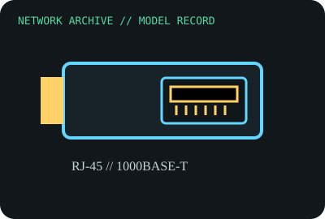

[ MODEL-SPECIFIC NETWORK HARDWARE RECORD ]
Cisco GLC-T 1000BASE-T Copper SFP Transceiver
Hot-pluggable Gigabit SFP with RJ-45 copper PHY, not a fiber optic module. Specifications are tied to this named product; confirm the physical label, revision and source documentation.

IDENTIFICATION: Verify exact PID/model, revision, label and host support. The catalog separates nominal PHY/link specifications from measured throughput; no benchmark is asserted unless explicitly recorded.
Model-specific specifications and compatibility
| Subcategory | SFP transceivers: optical and copper |
|---|---|
| Exact product/model | Cisco GLC-T 1000BASE-T Copper SFP Transceiver |
| Bus, ports and physical interface | SFP host cage; RJ-45 1000BASE-T copper connection; module uses 3.3V SFP interface and draws more power than basic optical SFPs. |
| PHY, radio or optical interface | 1000BASE-T over balanced twisted-pair copper; Cisco SFP family sheet specifies Cat 5 or better and up to 100m; verify platform firmware and cabling. |
| Nominal rate (not measured) | 1Gb/s nominal link rate over one copper port (some platform combinations negotiate supported lower rates per Cisco model sheet); this is not a measured payload result. |
| Measured throughput | No measured throughput or temperature test claimed. Record link partner, cable type/length, PHY negotiation and switch temperature/airflow under load. |
| Driver, OS and firmware | No host driver; switch/router must explicitly support GLC-T and its power/thermal requirements. Supported port speeds can differ by platform and software release. |
| Platform/media compatibility | RJ-45 copper SFP is not a 1000BASE-SX/LX optical module. Check Cisco compatibility matrix and port power/thermal limits; do not install into an unqualified SFP cage. |
| Variant warning | GLC-T should not be confused with GLC-TE extended-temperature, SFP-GE-T, or third-party coded copper SFP. Copper SFP power draw/heat and auto-negotiation support vary. |
Revision, operation and measurement notes
GLC-T should not be confused with GLC-TE extended-temperature, SFP-GE-T, or third-party coded copper SFP. Copper SFP power draw/heat and auto-negotiation support vary.
No host driver; switch/router must explicitly support GLC-T and its power/thermal requirements. Supported port speeds can differ by platform and software release.
No measured throughput or temperature test claimed. Record link partner, cable type/length, PHY negotiation and switch temperature/airflow under load.
Archival, ESD and preservation notes
Record exact PID suffix, serial, DOM/temperature if available, port model/firmware and connected cable. Cap the RJ-45 jack, avoid flexing the cage and store cool and ESD-protected.
Retain source provenance and the revision/date of each supporting document. Store public records without credentials, personal information or other secrets.
Primary manufacturer and standards sources
- Cisco SFP modules for Gigabit Ethernet data sheetPrimary manufacturer or standards reference; confirm exact part label, revision, and platform qualification.
- Cisco transceiver compatibility matrixPrimary manufacturer or standards reference; confirm exact part label, revision, and platform qualification.
- IEEE 802.3 Ethernet standardsPrimary manufacturer or standards reference; confirm exact part label, revision, and platform qualification.
Manufacturer source links are provided for the stated model or exact product family; use the board label and the official revision-specific compatibility list for final qualification.